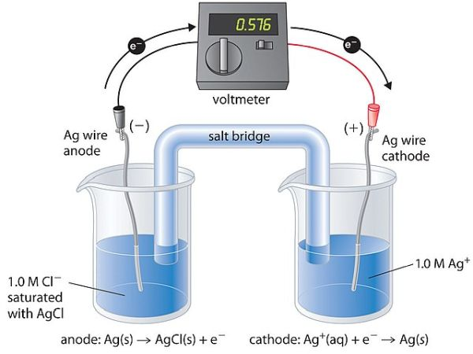

18 Redox Reactions and Electrochemistry

1. Redox Reactions
Redox (short for reduction–oxidation reaction) is a chemical reaction in which the oxidation states of atoms are changed. Any such reaction involves both a reduction process and a complementary oxidation process.
- Oxidation is the loss of electrons or an increase in oxidation state by a molecule, atom, or ion.
- Reduction is the gain of electrons or a decrease in oxidation state by a molecule, atom, or ion.
Example:

In this example, \(\ce{Na}\) loses one electron becoming \(\ce{Na+}\). We call this process the oxidation of \(\ce{Na}\). Simultaneously, \(\ce{F}\) gains one electron becoming \(\ce{F-}\). This process is called the reduction of \(\ce{F}\).
Reducing agent is an element or compound that loses (or “donates”) an electron to another chemical species in a redox chemical reaction. Since the reducing agent is losing electrons, it is said to have been oxidized.
Oxidizing agent is a substance that has the ability to oxidize other substances (cause them to lose electrons). In a redox reaction, the oxidizing agent itself is reduced.
Oxidation Number
The oxidation state, often called the oxidation number, is an indicator of the degree of oxidation (loss of electrons) of an atom in a chemical compound. Conceptually, the oxidation state, which may be positive, negative or zero, is the hypothetical charge that an atom would have if all bonds to atoms of different elements were 100% ionic, with no covalent component.
- The oxidation state of a free element (uncombined element) is zero.
- For a simple (monatomic) ion, the oxidation state is equal to the net charge on the ion.
- Hydrogen has an oxidation state of +1 and oxygen has an oxidation state of −2 when they are present in most compounds. Exceptions to this are that hydrogen has an oxidation state of −1 in hydrides of active metals, e.g. \(\ce{LiH}\), and oxygen has an oxidation state of −1 in peroxides, e.g. \(\ce{H2O2}\).
- Group IA metals have oxidation states of +1; IIA metals have +2. Fluorine always has an oxidation state of -1.
- The algebraic sum of oxidation states of all atoms in a neutral molecule must be zero, while in ions the algebraic sum of the oxidation states of the constituent atoms must be equal to the charge on the ion.
Balancing Redox Equations
Balance the equation showing the oxidation of \(\ce{Fe^2+}\) ions to \(\ce{Fe^3+}\) ions by \(\ce{Cr2O7^2-}\) in an acidic medium. The \(\ce{Cr2O7^2-}\) ions are reduced to \(\ce{Cr^3+}\).
- Write the unbalanced equation for the reaction in ionic form.
\[\ce{Fe^2+ + Cr2O6^2- -> Fe^3+ + Cr^3+}\]
- Separate the equation into two half-reactions.
\[\begin{align*} & \text{Oxidation:}\qquad\ce{Fe^2+ -> Fe^3+} \\ & \text{Reduction:}\qquad\ce{Cr2O7^2- -> Cr^3+} \end{align*}\]
- Balance the atoms other than O and H in each half-reaction.
\[\ce{Cr2O7^2- -> 2Cr^3+}\]
- For reactions in acid, add \(\ce{H2O}\) to balance O atoms and \(\ce{H+}\) to balance H atoms.
\[\begin{align*} & \ce{Cr2O7^2- -> 2 Cr^3+ + 7H2O}\\ & \ce{14H+ + Cr2O7^2- -> 2Cr^3+ + 7H2O} \end{align*}\]
Add electrons to one side of each half-reaction to balance the charges. \[\begin{align*} & \ce{Fe^2+ -> Fe^3+ + 1e-} \\ & \ce{6e- + 14H+ + Cr2O7^2- -> 2Cr^3+ + 7H2O} \end{align*}\]
If necessary, equalize the number of electrons in the two half-reactions.
\[\begin{align*} & \ce{6Fe^2+ -> 6Fe^3+ + 6e-} \\ & \ce{6e- + 14H+ + Cr2O7^2- -> 2Cr^3+ + 7H2O} \end{align*}\]
- Add the two half-reactions together and balance the final equation.
\[\begin{align*} \ce{14H+ + Cr2O7^2- + 6Fe^2+ -> 6Fe^3+ + 2Cr^3+ + 7 H2O} \end{align*}\]
- Verify that the number of atoms and the charges are balanced.
- If the reactions is in basic solutions, for each \(\ce{H+}\) add equal number of \(\ce{OH-}\) to both side of the reaction. Combine \(\ce{OH-}\) and \(\ce{H+}\) to form water.
To simplify the procedure, remember the following. First, separate the equation into tow half-reactions; secondly, balance the number of atoms; thirdly, balance the number of charges; finally, combine into one overal equation.
Example: Balance the following equation assuming the reaction occurs (a) in an acidic solution; and (b) in a basic solution.
\[\ce{H2O2 + Sn^{2+} -> H2O + Sn^{4+}}\]
Answer:
(a)
* Separate the equation into two half-reactions.
\[\begin{align*} & \text{Oxidation:}\qquad\ce{Sn^2+ -> Sn^4+} \\ & \text{Reduction:}\qquad\ce{H2O2 -> H2O} \end{align*}\]
Balance the atoms other than O and H in each half-reaction. (No need to do anything for this example.)
For reactions in acid, add \(\ce{H2O}\) to balance O atoms and \(\ce{H+}\) to balance H atoms.
\[\begin{align*} & \ce{H2O2 -> 2H2O}\\ & \ce{2H+ + H2O2 -> 2H2O} \end{align*}\]
- Add electrons to one side of each half-reaction to balance the charges.
\[\begin{align*} & \ce{Sn^2+ -> Sn^4+ + 2e-} \\ & \ce{2e- 2H+ + H2O2 -> 2H2O} \end{align*}\]
If necessary, equalize the number of electrons in the two half-reactions. (No need to do anything for this example.)
Add the two half-reactions together and balance the final equation.
\[\begin{align*} \ce{Sn^2+ + 2H+ + H2O2 -> Sn^4+ + 2H2O} \end{align*}\]
(b)
* for each \(\ce{H+}\) add equal number of \(\ce{OH−}\) to both side of the reaction. Combine \(\ce{OH−}\) and \(\ce{H+}\) to form water.
\[\begin{align*} & \ce{Sn^2+ + 2H+ +2OH- + H2O2 -> Sn^4+ + 2H2O + 2OH-}\\ & \ce{Sn^2+ + 2H2O + H2O2 -> Sn^4+ + 2H2O + 2OH-}\\ & \ce{Sn^2+ + H2O2 -> Sn^4+ + 2OH-} \end{align*}\]
Requirements
1. Understand the concepts.
2. Learn how to balance a redox equation.
2. Galvanic Cells
Electrochemical Processes are oxidation-reduction reactions in which
- the energy released by a spontaneous reaction is converted to electricity; or
- electrical energy is used to cause a nonspontaneous reaction to occur.
A Galvanic Cell or voltaic cell is the experimental apparatus for generating electricity through the use of a spontaneous reaction.
Example:

An electrode is an electrical conductor used to make contact with a nonmetallic part of a circuit. In the example above, the electrodes are the zinc and copper bars. The nonmetallic part of the circuit is the electrolyte solution and the salt bridge.
- Anode is the electrode at which oxidation occurs;
- Cathode is the electrode at which reduction occurs.
The half-cell reactions are:
\[\begin{align*} & \text{Zn electrode (anode):}\qquad & \ce{Zn(s) -> Zn^2+ (aq) + 2e-}\\ & \text{Cu electrode (cathode):}\qquad & \ce{Cu^2+ (aq) + 2e- -> Cu(s)} \end{align*}\]
The overall reaction is:
\[\ce{Zn(s) + Cu^2+ (aq) -> Zn^2+ (aq) + Cu(s)}\]
A salt bridge is an inverted U tube containing an inert electrolyte solution, such as \(\ce{KCl}\) or \(\ce{NH4NO3}\), whose ions will not react with other ions in solution or with the electrodes.
The voltage across the electrodes of a galvanic cell is called the cell voltage, or cell potential. Another common term for the cell potential is the electromotive force or emf (E).
Cell diagram is the conventional notation for representing galvanic cells with anode on the left and cathode on the right. The salt bridge is denoted as double verticl lines.
\[\ce{Zn(s)}|\ce{Zn^2+} (1\text{ M, aq})||\ce{Cu^2+} (1\text{ M, aq})|\ce{Cu(s)}\]
If inert electrode is used, such as hydrogen electrode, the cell diagram should be written as: \[\ce{Pt(s)|H2(1 atm)|H+(1 M)}\]
Example: Given the overall cell reaction, determine the half reactions and the cell diagram. In this cell, a solid magnesium anode is immersed in an aqueous solution of magnesium chloride that is connected via a salt bridge to an aqueous solution containing a mixture of iron(III) chloride and iron(II) chloride, immersed in which is a platinum cathode. The concentrations of the ions are \(\ce{Mg^2+}\) (0.1 M), \(\ce{Fe^3+}\) (0.2 M), \(\ce{Fe^2+}\) (0.3 M).
\[\ce{Mg(s) + 2Fe^3+ (aq) -> Mg^2+ (aq) + 2Fe^2+ (aq)}\] Answer:
The half-cell reactions are:
\[\begin{align*} & \text{Mg electrode (anode):}\qquad & \ce{Mg(s) -> Mg^2+ (aq) + 2e-}\\ & \text{Pt electrode (cathode):}\qquad & \ce{Fe^3+ (aq) + e- -> Fe^2+ (aq)} \end{align*}\]
The cell diagram:
\[\ce{Mg(s)|Mg^2+}\text{(0.1 M, aq)}||\ce{Fe^3+}\text{(0.2 M, aq)},\ce{Fe^2+}\text{(0.3 M, aq)}|\ce{Pt(s)}\]
Requirements
1. Understand the concepts.
3. Standard Reduction Potentials
Standard reduction potential (\(E^\ominus\)) is the voltage associated with a reduction reaction at an electrode when all solutes are 1 M and all gases are at 1 atm. A list of standard electrode potentials can be find here.
Standard Hydrogen Electrode (SHE): To form a basis for comparison with all other electrode reactions, hydrogen’s standard electrode potential (\(E^\ominus\)) is declared to be 0 V at all temperatures.
Potentials of any other electrodes are compared with that of the standard hydrogen electrode at the same temperature.
* Changing the stoichiometric coefficients of a half-cell reaction DOES NOT change the value of \(E^\ominus\). * Electrode reactions are reversible.
Overall Reaction and Cell Diagram
- A couple of any two electrode reactions can form a galvanic cell;
- The electrode with higher \(E^\ominus\) will be the cathode; the other will be the anode;
- The cathode reaction will be reduction as written in; the anode reaction will be oxidation which is reverse reaction as written.
- The cell diagram starts from anode (must be solid) ends to cathode.
- The cell potential is the \(E^\ominus\) of cathode minus that of the anode.
Example: Given two electrode reactions, identify which is the anode and which is the cathode, determine the overall cell reaction, the cell diagram, the standard cell potential.
\[\begin{align*}
& \ce{2Ag+(aq) + 2e- -> 2Ag(s)}\quad E^\ominus = +0.80\,\text{V}\\
& \ce{Cu^2+(aq) + 2e- -> Cu(s)}\quad E^\ominus = +0.34\,\text{V}
\end{align*}\] Answer:
The one with higher standard reduction potential is the cathode.
\[\begin{align*}
& \ce{2Ag+(aq) + 2e- -> 2Ag(s)}\quad E^\ominus = +0.80\,\text{V}\quad \text{Cathode} \\
& \ce{Cu^2+(aq) + 2e- -> Cu(s)}\quad E^\ominus = +0.34\,\text{V}\quad \text{Anode}
\end{align*}\]
The anode reaction is the reverse reaction which is:
\[\ce{Cu(s) -> Cu^2+(aq) + 2e-}\]
The overall reaction is: \[\ce{Cu(s) + 2Ag+(aq) -> Cu^2+ + 2Ag(s)}\]
The cell diagram is: \[\ce{Cu(s)|Cu^2+(1 M)||Ag+(1 M)|Ag(s)}\]
The cell potential is:
\[\begin{align*} E^\ominus_\text{cell} & =E^\ominus_\text{cathode}-E^\ominus_\text{anode} \\ & = 0.80 - 0.34 \\ & = 0.46\,\text{V} \end{align*}\]
Requirements
1. Given two half reactions, tell the overall reaction, cell diagram and cell potential;
2. Given the overall reaction, tell the cell diagram and cell potential.
4. Nernst Equation
Thermodynamics of Redox Reactions
Under standard-state conditions
\[\Delta G^\ominus = -RT\ln K = - nFE^\ominus\]
or
\[E^\ominus = \frac{RT}{nF}\ln K = -\frac{\Delta G^\ominus}{nF}\]
where \(n\) is the number moles of electron transfer, \(F\) is Faraday constant which equals 96485 C/mol.
| \(\Delta G^\ominus\) | \(K\) | \(E^\ominus_\text{cell}\) | Reaction Under Standard-State Conditions |
|---|---|---|---|
| Negative | \(>1\) | Positive | Favors formation of products |
| 0 | \(=1\) | 0 | Reactants and products are equally favored |
| Positive | \(<1\) | Negative | Favors formation of reactants |
Non standard-state conditions
\[E=-\frac{\Delta G}{nF}=-\frac{\Delta G^\ominus + RT\ln Q}{nF}\]
or
\[E=E^\ominus-\frac{RT}{nF}\ln Q\qquad\text{Nernst Equation}\]
Concentration Cell: A Galvanic cell from two half-cells composed of the same material but differing in ion concentrations (In general, Anode: low concentration and Cathode: high concentration).
For a concentration cell:
\[E=-\frac{RT}{nF}\ln Q\]
Example: What is the standard free energy change and the equilibrium constant for the following reaction at room temperature? Is the reaction spontaneous?
\[\ce{Sn(s) + 2Cu^2+ (aq) -> Sn^2+ (aq) + 2Cu^+ (aq)}\] Answer:
\[\begin{align*}
\ce{Sn^2+ (aq) + 2e- -> Sn (s)}\quad E^\ominus = -0.1375\text{ V}\\
\ce{Cu^2+ (aq) + e- -> Cu^+ (aq)}\quad E^\ominus = 0.153\text{ V}
\end{align*}\]
The former has a lower standard electrode potential and thus is the anode. The anode reaction should be reversed. The overall reaction is: \[\ce{2Cu^2+ (aq) + Sn(s) -> 2Cu+ (aq) + Sn^2+ (aq)}\] The value of \(n\) is 2. \[\begin{align*} E^\ominus & = 0.153 - (-0.1375) = 0.290\text{ V}\\ \Delta G^\ominus & = -nFE\\ & = -2\times96485\text{ C/mol}\times0.290\text{ V}\\ & = -5.60\times10^4\text{J/mol}\\ K & = \exp\left(-\frac{\Delta G^\ominus}{RT}\right)\\ & = \exp\left(-\frac{-5.60\times10^4\text{ J/mol}}{8.314\text{ J/mol.K}\times298\text{ K}}\right)\\ & = 6.55\times10^9 \end{align*}\]
This reaction is spontaneous.
Example: For the cell diagram below, identify values for \(n\) and \(Q\), and calculate the cell potential.
\[\ce{Al(s)|Al^3+}(0.15\text{ M, aq})||\ce{Cu^2+}(0.025\text{ M, aq})|\ce{Cu(s)}\] Answer:
\[\begin{align*}
\ce{Al^3+ (aq) + 3e- -> Al (s)}\quad E^\ominus = -1.662\text{ V}\\
\ce{Cu^2+ (aq) + 2e- -> 2Cu (2)}\quad E^\ominus = 0.34\text{ V}
\end{align*}\]
The former has a lower standard electrode potential and thus is the anode. The anode reaction should be reversed. The overall reaction is: \[\ce{3Cu^2+ (aq) + 2Al(s) -> 3Cu(s) + 2Al^3+ (aq)}\] The value of \(n\) is 6. \[\begin{align*} E^\ominus & = 0.34 - (-1.662) = 2.00\text{ V}\\ Q & = \frac{[\ce{Al^3+}]^2}{[\ce{Cu^2+}]^3}\\ & = \frac{0.15^2}{0.025^3}\\ & = 1.4\times10^3\\ E & = E^\ominus-\frac{RT}{nF}\ln Q\\ & = 2.00\text{ V} - \frac{8.314\text{ J/mol.K}\times298\text{ K}}{6\times96485\text{ C/mol}}\ln(1.4\times10^3)\\ & = 1.97\text{ V} \end{align*}\]
This reaction is spontaneous.
Example: What is the cell potential of a cencentration cell with \(\ce{Zn^2+}\) concentrations of 0.10 M and 0.50 M in the two half cells with Zn(s) as the electrodes.
Answer:
\[\begin{align*}
& \text{Anode:}\quad\ce{Zn(s) -> Zn^2+}(0.10\text{ M, aq})\ce{+ 2e-}\\
& \text{Cathod:}\quad\ce{Zn^2+}(0.50\text{ M, aq})\ce{+ 2e- -> Zn(s)}
\end{align*}\] Overall reaction: \[\ce{Zn^2+}(0.50\text{ M, aq})\ce{-> Zn^2+}(0.10\text{ M, aq})\]
The value of \(n\) is 2. \[\begin{align*} E & = -\frac{RT}{nF}\ln Q\\ & = -\frac{8.314\text{ J/mol.K}\times298\text{ K}}{2\times 96485\text{ C/mol}}\ln\frac{0.1\text{ M}}{0.5\text{ M}}\\ & =0.0207\text{ V} \end{align*}\]
Requirements
1. Three parameters: \(\Delta G^\ominus\), \(K\) and \(E^\ominus\), knowning the value of one, calculat the other two;
2. Understand the meaning of \(\Delta G^\ominus\), \(K\) and \(E^\ominus\) values (see the table above);
3. Calculate the value of \(E\), knowing the concentrations of the solutions used in a galvanic cell.
5. Applications
5.1 Corrosion
Corrosion is the deterioration of metals by an elecrochemical process.
Rust forms in humid air. Corrosion is very slow in dry air or under water, but is fast close to the interface.
5.2 Electrolysis
Electrolysis is the process in which electrical energy is used to cause a nonspontaneous chemical reaction to occur.
Examples:
Electrolysis of water generates \(\ce{H2}\) and \(\ce{O2}\), which is the reverse reaction of \(\ce{H2}\) burning.
Electrolysis of \(\ce{NaCl}\) produces metal \(\ce{Na}\) and gaseous \(\ce{Cl2}\).
5.3 Batteries
A Battery is a galvanic cell, or a series of combined galvanic cells, that can be used as a source of direct electric current at a constant voltage.
Examples:
- Dry cell battery
- Mercury battery
- Lead storage battery
- Lithium-ion battery
- Fuel cell (a galvanic cell that requires a continuous supply of reactants to keep functioning)
Requirements
1. Understand why corrosion is a electrochemical process;
2. Understand what is electrolysis.
3. Be familiar with several types of batteries.
Practice Questions
- Identify each half-reaction below as either oxidation or reduction. Determine the oxidation numbers of the elements before and after the reactions.
- \(\ce{Fe^3+ -> Fe}\)
- \(\ce{Mn^2+ -> MnO2}\)
- \(\ce{MnO4^2- -> MnO4^-}\)
- \(\ce{NO3^- -> NO}\)
Answer: R, O, O, R.
- Given the half reactions, complete the balanced equations for the overall reactions in acidic (or basic) solutions.
- \(\ce{Ca -> Ca^2+}\) and \(\ce{F2 -> 2F-}\)
- \(\ce{Fe -> Fe^3+}\) and \(\ce{MnO4^- -> MnO2}\)
- \(\ce{Al -> Al^3+}\) and \(\ce{Cr2O7^2- -> Cr^3+}\)
- \(\ce{H2S -> SO4^{2-}}\) and \(\ce{MnO4^- -> Mn^{2+}}\)
Given two electrode reactions, identify which is the anode and which is the cathode, determine the overall cell reaction, the cell diagram, the standard cell potential.
\[\begin{align*} & \ce{Al^3+ (aq) + 3e- -> Al (s)}\quad E^\ominus = -1.66\text{ V}\\ & \ce{Ag^+ (aq) + e- -> Ag (s)}\quad E^\ominus = 0.80\text{ V} \end{align*}\]What is the standard free energy change and the equilibrium constant for the following reaction at room temperature? Is the reaction spontaneous?
\[\ce{H2(g) + 2Ag+(aq) -> 2H+(aq) + 2Ag(s)}\]
Answer: \(E^\ominus = 0.80\) V, \(\Delta G^\ominus = -77.2\) kJ/mol, \(K = 3.4\times 10^{13}\), spontaneous.For the cell diagram below, identify values for \(n\) and \(Q\), and calculate the cell potential. (Standard reduction potentials for Mg is -2.37 V, Pb -0.13 V.)
\[\ce{Mg(s)|Mg^2+}(0.0514\text{ M, aq})||\ce{Pb^2+}(0.0437\text{ M, aq})|\ce{Pb(s)}\] Answer: \(n=2\), \(Q=1.18\), \(E = 2.238\) V.Consider the following standard reduction potentials in acid solution: \[\begin{align*} & \ce{Al^3+ + 3e- -> Al}\quad E^\ominus = -1.66\text{ V}\\ & \ce{Fe^3+ + e- -> Fe^2+}\quad E^\ominus = 0.77\text{ V}\\ & \ce{Sn^4+ + 2e- -> Sn^2+}\quad E^\ominus = 0.14\text{ V}\\ & \ce{AgBr (s) + e- -> Ag (s) + Br^{-}(aq)}\quad E^\ominus = 0.07\text{ V} \end{align*}\]
What is the strongest oxidizing agent and what is the strongest reducing agent among those shown above?
Answer: \(\ce{Fe^3+}\) is the strongest oxidizing agent, \(\ce{Al}\) is the strongest reducing agent.Two copper electrodes are put into two aqueous solutions of copper sulfate at 0.100 M and 1.00 M concentrations. The two solutions are connected by a salt bridge to form a galvanic cell. What is the cell potential?
Answer: 0.0296 VConsider the following reaction, what is the reducing agent? what is the oxidizing agent? \[\ce{2Mg + O2 -> 2MgO}\] Answer: Mg is the reducing agent, \(\ce{O2}\) is the oxidizing agent.
Copyright
Copyright(C) 2022 Yu Wang

This work is licensed under a Creative Commons Attribution 4.0 International License.